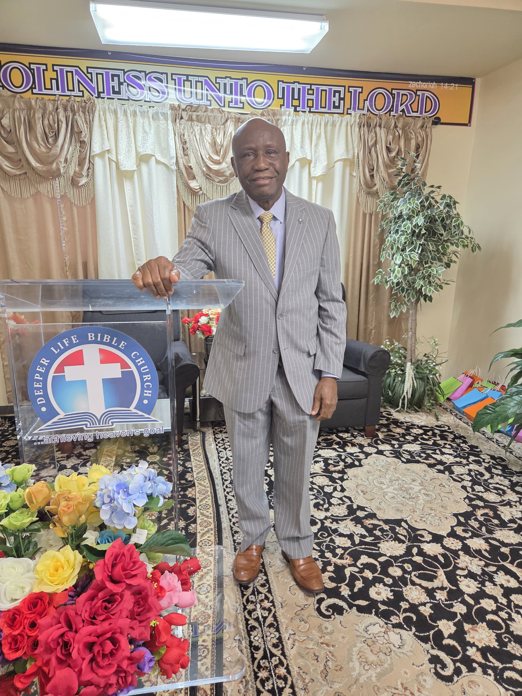

Pastor Dr. James K. Amara is a dedicated Christian minister, church leader, and healthcare professional who has faithfully served Deeper Life Bible Church (DLBC) for approximately 39 years, from 1987 to the present (2026), in both Sierra Leone and the United States. He currently serves as the Regional Prayer Coordinator for the Midwest Region and is in charge of DLBC Alexandria, Virginia Branch.
Pastor Amara joined Deeper Life Bible Church in Sierra Leone in 1987 and became fully born again on October 31, 1988. With a strong passion for soul winning, evangelism, and church development, he helped establish and strengthen churches in Freetown and served as Coordinator of the New England and Wilberforce branches. He also served on several church committees, including as Chairman of the Marriage Committee, and was entrusted with conducting weddings in the church.
He earned a B.Sc. in Economics from Fourah Bay College (FBC), University of Sierra Leone, in 1983. Professionally, he worked for the Bank of Sierra Leone from July 1975 until his voluntary retirement in December 2001. He relocated with his family to the United States in 2002 and later transitioned into healthcare, becoming a Licensed Practical Nurse (LPN) in 2013.
Since 2003, Pastor Amara has continued his ministry in the United States under the leadership of Regional Overseer Pastor Michael Dada, serving in various capacities, including the Men's Fellowship and volunteer service at the DLBC Headquarters Church in Washington, D.C. In 2019, he was transferred to DLBC Lanham, Maryland Branch, where he served with Pastor Reggie Okpara.
In September 2021, he was transferred to DLBC Alexandria, Virginia Branch, where he served for approximately three and a half years with former Senior Pastor Kwabena Nsiah, until Pastor Nsiah relocated to Ghana in July 2025. Pastor Amara continues to provide leadership at the Alexandria branch, inspiring workers and members toward spiritual growth, evangelism, unity, and church development.
With approximately 39 years of continuous service to Deeper Life Bible Church (1987–2026), Pastor Dr. James K. Amara remains committed to prayer, soul winning, Christian leadership, and preparing believers for the coming of our Lord Jesus Christ.
Pastor Dr. James K. Amara
Location Pastor, Deeper Life Bible Church — Alexandria, VA